Lucas Campos, 2024
Outros conteúdos: Física Química
Os isótopos são variações de um elemento químico que possuem diferentes números de nêutrons.
O decaimento radioativo (ou transmutação) é o processo natural em que um núcleo atômico instável emite radiação, de forma sucessiva, a fim de diminuir sua energia e tornar-se estável
A emissão alfa, desintegração alfa ou decaimento alfa é uma forma de decaimento radioativo
que ocorre quando um núcleo atômico instável emite uma partícula alfa transformando-se em outro núcleo atômico
com número atômico de duas unidades menor e número de massa 4 unidades menor.
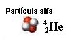
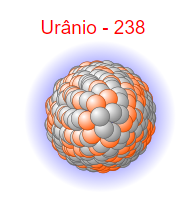
No decaimento beta ocorre a emissão de uma partícula que pode ser um elétron ou um pósitron.
No decaimento β−, um nêutron é convertido num próton, com a emissão de um elétron e de um antineutrino de elétron (a antipartícula do neutrino)
No decaimento β+, um próton é convertido num nêutron, com a emissão de um pósitron e de um neutrino de elétron
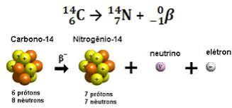
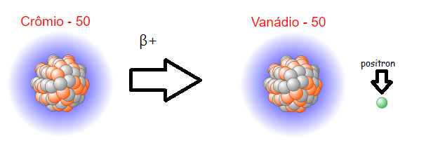
Decaimento gama é tipo de decaimento radioativo quando ocorre emissão de raios gama, fótons de alta energia
em resultado de transição de núcleo de um estado excitado a um estado de energia mais baixa.
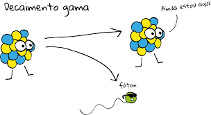
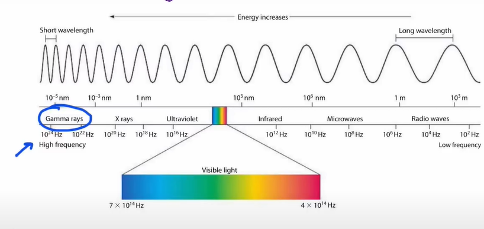
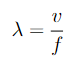
λ -> Comprimento da Onda (m)
v -> Velocidade da Onda (m/s)
f -> Frequência da Onda (Hz)
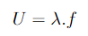
λ -> Comprimento da Onda (m)
U -> Velocidade de Propagação da Onda (m/s)
f -> Frequência da Onda (Hz)
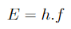
E -> Energia da Onda
h -> Constante de Planck
f -> Frequência da Onda
Então, uma onda gama tem muita energia, pois a frequência da onda é extremamente grande.
São átomos carregados tanto com carga positiva (cátions) ou negativa (ânions), ambos tem uma certa atração eletromagnética pelo outro.
Um exemplo dessa atração é o do Cl- (Ânion de cloro) e do Na+ (Cátion de sódio)
O átomo pode ser carregado com carga negativa quando o número de elétrons excede o número de prótons.
E já os cátions são o contrário dos ânions; são carregados com carga positiva; o número de prótons é maior do que o de elétrons.
Os ânions e os cátions são atraídos pois um átomo precisa de elétrons e outro precisa de ceder elétrons para se estabilizar
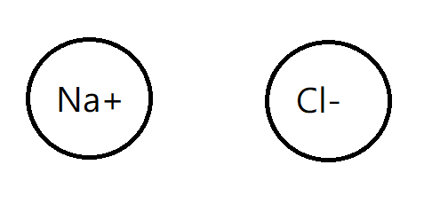
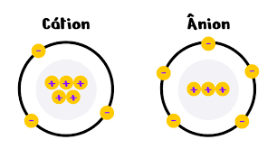
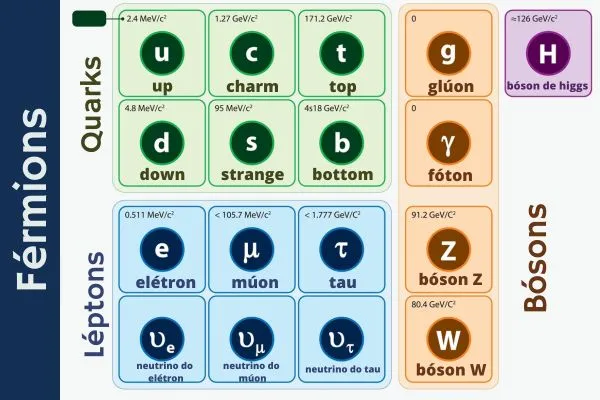
Compõe os prótons e os nêutrons, tem spin +1/2 e tem massa 2.15±0.15 MeV/c².
Tem carga elétrica +2/3 e
Compõe os prótons e os nêutrons, tem spin +1/2 e tem massa 4.8+0.5; -0.3 MeV/c2
Tem carga elétrica -1/3 e
Tem spin +1/2, carga elétrica +2/3 e tem massa 1.27 GeV/c².
Tem spin +1/2, carga elétrica -1/3, e tem massa 104 MeV/c².
Tem massa 171.2 GeV/c².
Tem carga elétrica de -1/3 e, com uma massa de 4.7 GeV/c².
Tem símbolo e- ou β− e tem carga elétrica negativa, tem a massa aproximadamente de 1/1836 de um próton.
Tem carga elétrica de -1 e, e o tempo de decaimento dessa partícula é de mais de 6.6x10^28 anos. (Estável)
Tem massa de 0.511 MeV/c²
Tem spin 1/2, tem carga neutra (0 e)
Tem como antipartícula o Antineutrino do Elétron
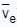
É uma partícula semelhante ao elétron, com carga elétrica de -1 e e spin de 1/2, mas com uma massa muito maior (105.66 MeV/c²).
Tem como antipartícula o antimúon (μ+)
Tem carga elétrica neutra (0 e), spin 1/2 e tem como antipartícula o antineutrino do múon
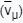
Ele é parecido com um elétron, genericamente chamado de "elétron superpesado", tem massa 1.777 GeV/c², tem carga elétrica -1 e, spin 1/2
Tem como antipartícula o Antitau
Tem carga elétrica neutra (0 e), tem spin 1/2 e tem como antipartícula o Antineutrino do tau
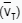
Glúons ou gluões são partículas fundamentais que agem como partículas de troca para a força forte entre quarks
análoga à troca de fótons na força eletromagnética entre duas partículas carregadas e tem massa nula.
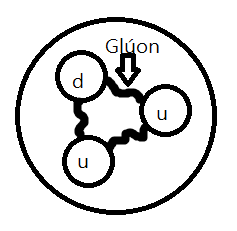
Tem massa nula, pode ser representado por símbolos como γ, hν, ou ħω.
Tem carga elétrica nula (ou menor que 1.10^-35 e) e tem spin 1
Pode ser criado por decaimento nuclear, como o decaimento gama.
Em física de partículas, os bósons W e Z são bósons vetoriais que juntos são conhecidos como bósons fracos ou mais geralmente como bósons vetoriais intermediários.
Essas partículas elementares medeiam a interação fraca; os respectivos símbolos são W+ , W- , e Z0.
Massa do Bóson Z -> 91.2 GeV/c²
Massa do Bóson W -> 80.4 GeV/c²
Bóson de Higgs ou bosão de Higgs é uma partícula elementar bosônica prevista pelo Modelo Padrão de partículas
teoricamente surgida logo após ao Big Bang de escala maciça hipotética predita para validar o modelo padrão atual de partículas.
Tem uma massa de aproximadamente 126 GeV/c².
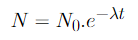
N -> Número de Átomos
N0 -> Número de Átomos inicial
λ -> Constante de Decaimento
t -> Tempo
t1⁄2> -> Meia-vida
Quando t = t1/2, o número de átomos cai pela metade, ou seja N = N0/2
Ou seja, N0/2 = N0.e-λ.t1⁄2, e também N0 se repete nos dois lados da equação, então podemos cortá-los da equação
ficando 1⁄2 = e-λ.t1⁄2, continuando a lógica do raciocínio,(ln = logarítmo) ln 1⁄2 = ln e-λ.t1⁄2
e depois ln 1 - ln 2 = ln e-λ.t1⁄2, depois ln 1 - ln 2 = -λt1⁄2 . ln e, usando uma calculadora para calcular os logarítmos, temos
0 - ln 2 = -λt1⁄2 . 1 -> -ln 2 = -λt1⁄2 -> ln 2 = λt1⁄2
λ = 0,693⁄t1⁄2
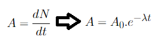
A -> Atividade
dN -> Derivada do número de átomos
dt -> Tempo
A0 -> Atividade inicial
λ -> Constante de decaimento
t -> Tempo
Becquerel (Bq)
1 Bq = 1 Desintegração/s (podemos abreviar desintegração para apenas "d", assim ficaria 1 dPs)
Curie (Ci)
1 Ci = 1g de Rádio-226
1 Ci = 3,7 . 1010 Bq ou 3,7 . 1010 dPs
É simbolizado pela letra "u", 1 u = 1/12 da massa do Carbono-12 (Um isótopo estável, composto por 6 prótons e 6 nêutrons, com massa equivalente a 12 u)
1 u também equivale a 1,66054 . 10-24. Exemplo: Supondo que o átomo de sódio é 23 vezes maior que a massa de 1/12 da massa do Carbono-12, ele tem 23 u.
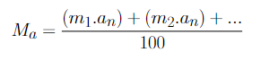
Ma -> Massa atômica (u)
m1 -> Massa do primeiro isótopo
an -> Abundância do isótopo na natureza (%)
m2 -> Massa do segundo isótopo
an -> Abundância do isótopo na natureza
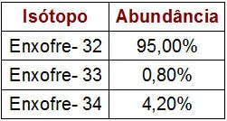
1º passo:
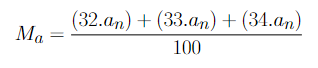
Substituir mn pelas massas